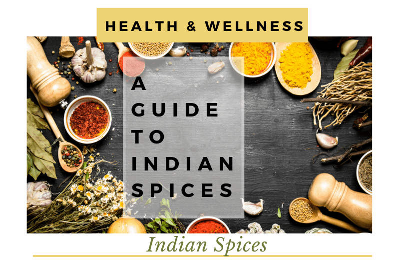

Indian cuisine consists of a variety of regional and traditional cuisines native to the Indian subcontinent. Given the diversity in soil, climate, culture, ethnic groups, and occupations, these cuisines vary substantially and use locally available spices, herbs, vegetables, and fruits.Traditional Indian food is built from the same flavor foundations. However, dishes vary widely between North Indian and South Indian cuisine.
Indian food, not unlike any other country’s national food scene, is a vast constellation of culinary influences and traditions from all over the Asian continent.Besides the standard spice kit of chili peppers (dried whole and powdered), garlic, ginger, and allspice, common ingredients in Indian cooking.North Indian cuisine is dominated by rich curries and thick sauces paired with breads and fragrant yogurts. It features spice-forward dishes made in clay ovens, like tandoori chicken and chana masala.